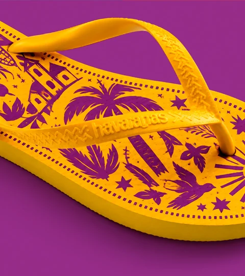
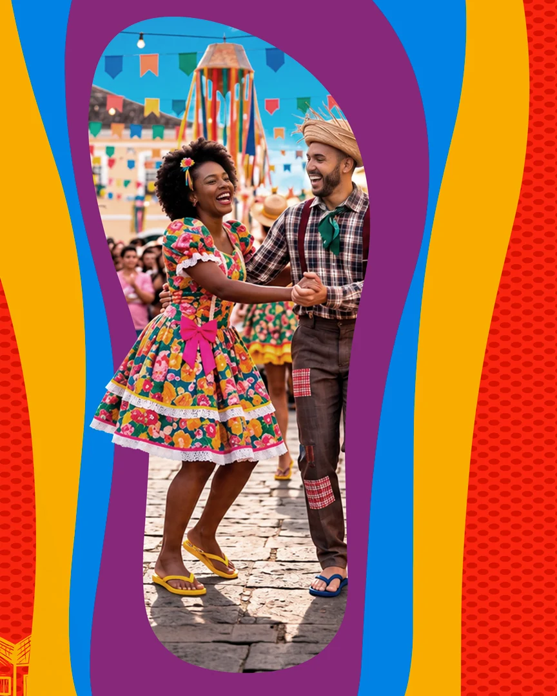
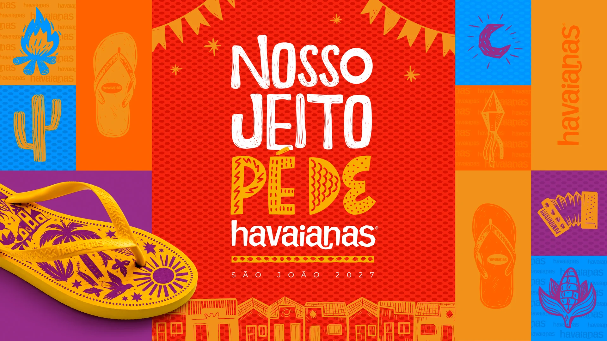
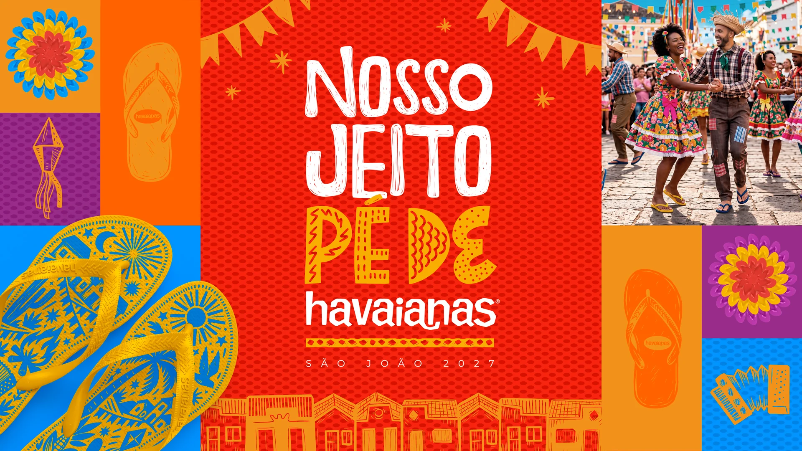
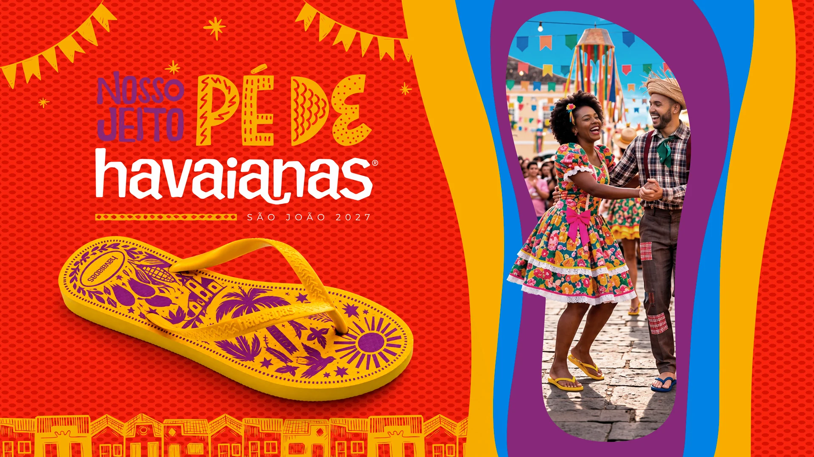
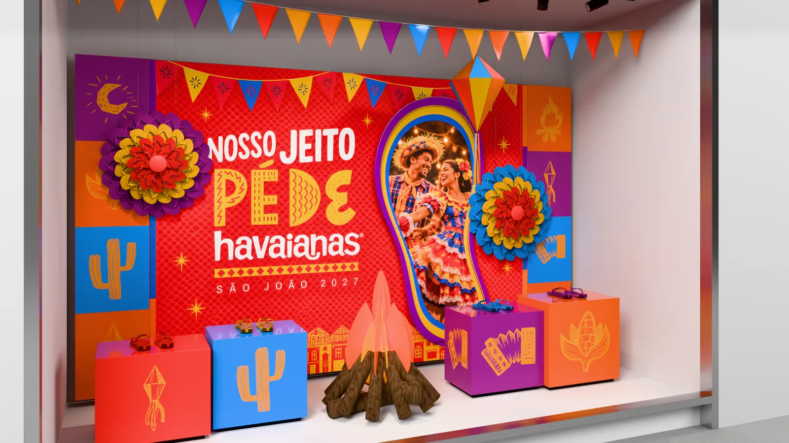

Campanha demo São João 2027
Um conceito, três key visuals e 51 peças de ponto de venda em 3D, do DTC ao B2B.
Campanha demonstrativa criada pela 75 LAB para o BID nº 33212 da Alpargatas. Não é material oficial da Havaianas.
Em vez de mostrar portfólio, a gente fez a campanha.
Pegamos o São João do calendário 2027 e levamos do conceito ao ponto de venda: briefing de key visual, três versões de KV e cada peça da lista do BID modelada em 3D, com conceito e render.
Tudo feito em outubro de 2026, durante a concorrência, pelo mesmo time que vai atender a conta.

A quebra de linha é a piada.
Lido corrido, o ouvido entende nosso jeito pede Havaianas. Lido na arte, o olho vê pé de. A frase trabalha duas vezes sem explicar nenhuma das duas, e por isso as duas linhas nunca viram uma só.
- pé de valsa
- pé de serra
- pé de boi
- pé de cana
- pé de Havaianas
Ser pé de alguma coisa é ser chegado nela. Não precisa ensinar: já chega entendido.
A tira é a bandeirinha.
A tira da Havaianas é um V. A bandeirinha pendurada é um V. Mesma forma, mesmo ângulo, invertida. A ideia nasce do produto, não da festa.

Tem coisa que é difícil explicar. Mas basta sentir pra reconhecer. Tá no nosso jeito de falar, de sorrir, de abraçar.
Na liberdade de ser quem a gente é, sem precisar ser igual a ninguém. Cada um tem seu jeito, mas a alegria é de todo mundo.
E se tem uma festa que traduz isso, é o São João. Onde a sanfona puxa, o coração acompanha e cada pé encontra o seu caminho.
Tem quem dance juntinho. Tem quem se solte no meio da roda. Tem quem saiba todos os passos. E tem quem invente os seus.
Porque aqui ninguém precisa ser igual pra fazer parte. A gente é mais feliz quando pode ser a gente.
No peito, a liberdade. Nas raízes, o orgulho. Nos passos, a felicidade. E no pé, Havaianas.
Vermelho festa
Contraste conferido por cálculo, não por impressão.
Xilogravura, não vetor.
- Linha grossa e irregular, com falha de tinta
- Contorno que não fecha perfeito
- Malha da sola como trama de fundo
- Nada de gradiente, brilho ou bisel
Três KVs, um jeito só.



A quadrilha vista de cima é a grade de produto.
Pares em roda, todos voltados para o centro. Uma imagem mostra a festa e mostra o mix. Cada par vem em camada separada, então a roda pode ser recortada em qualquer fração sem refazer a foto.
- Câmera a prumo90° do chão: a roda lê como círculo, não como elipse
- Chão de verdadeterra batida, tábua corrida ou cimento queimado
- Pés em movimentoum calcanhar levantado: é dança, não vitrine
- Luz de fogueiraquente e lateral, com sombra definida
Do KV ao ponto de venda: 51 peças em 3D.
Lista de peças do BID nº 33212 · cada peça com cena 3D, renders e conceito.

A vitrine abre a campanha.
Vitrine de 4 m com backdrop de 3 × 2,25 m, o casal da quadrilha no quadro em forma de sola, flores de chinelo em 3D, pedestais nos blocos de malha e a fogueira.
DTC: 25 peças, da vitrine à gancheira.
Lojas próprias, franquias e quiosques. Clique numa peça para abrir a ficha.
Renders das cenas 3D da 75 LAB, com o produto em tamanho real (par 37/38, sola de 255 mm).
B2B: 26 peças para o varejo parceiro.
Alimentar: supermercados e atacarejo · Especializado: calçados e departamento · Compartilhado: peças que servem aos dois.
O conceito sai em minutos. O 3D corrige o que a imagem inventa.
O conceito é gerado a partir dos KVs. A cena 3D refaz a peça com medida de verdade: chinelo 37/38 no tamanho real, altura de pega, lettering na altura dos olhos e substratos que existem na fábrica.
Cada peça em tamanho real, no ponto de venda.
Aponte o celular para o QR: a peça aparece no chão ou na parede da loja, na medida certa e com a luz do render. O promotor confere se cabe no ponto antes de a peça ir para a fábrica.
projetos.75lab.com.br/ar/havaianas-sao-joao-2027
Isso é o que a gente faz antes de ganhar a conta.
Agora imagine com o calendário inteiro de 2027, o briefing de vocês e o time dedicado.

75 LAB Estratégia, Design e Produção Ltda · CNPJ 55.470.982/0001-77 · Av. das Nações Unidas, 12.901, São Paulo · 75lab.com.br · Campanha demonstrativa para o BID nº 33212, não é material oficial da Havaianas.